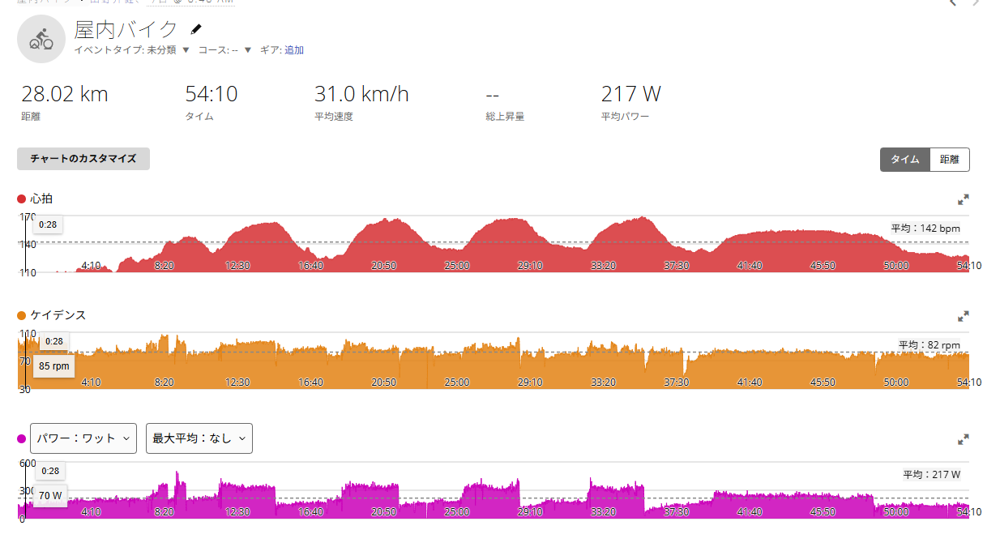
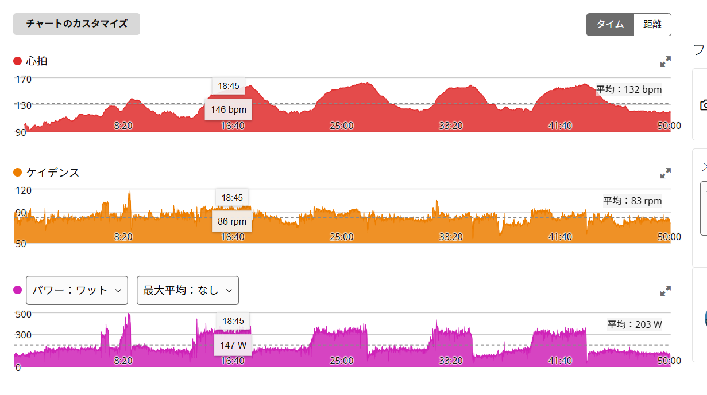

VO2ローラーで4本目に撃沈。
でも9分テンポは踏めた
今日は雨だったので、外ではなくローラー。メニューはVO2刺激で、RNC7とGT-ROLLER Q1.1を使って3分×4本をやることにした。前回のSSTでは2本目の残り5分で心拍と呼吸がきつくなったので、今日は長く粘るより短めの高強度で心肺に刺激を入れる日である。
正直、練習前は少しワクワクしていた。3分×4本。数字だけ見ると、なんとなくできそうな気がする。「3分ならいけるでしょ」「4本ならまあ何とかなるでしょ」くらいの軽さで始めた。結果として、楽勝だと思っていたメニューに普通に殴られた。

全部読むのが面倒な人向けまとめ
- 雨なのでローラー。SSTの翌日にVO2刺激として3分×4本を実施。
- 1〜3本目は333W、336W、327Wで狙い通り。4本目は317Wまで落ちた。
- 体感としては脚というより、VO2域の心肺と呼吸が限界に近かった。
- その後の9分テンポ走は240Wで、まだ余裕があった。
- 全体は54分、NP249W、IF0.907、TSS73.6。できなかった部分も含めて成功寄り。
今日のメインは3分×4本
今日のメインはVO2刺激の3分走。FTP設定は275Wで、3分のVO2目安はだいたい325〜345Wくらい。始める前は「このくらいならいける」と思っていた。今思えば、この時点で少し調子に乗っている。
- 1本目3:01 / 333W / 平均心拍155bpm / 最大心拍163bpm
- 2本目3:01 / 336W / 平均心拍156bpm / 最大心拍167bpm
- 3本目3:01 / 327W / 平均心拍159bpm / 最大心拍167bpm
- 4本目3:01 / 317W / 平均心拍159bpm / 最大心拍169bpm
1本目333W、2本目336W、3本目327W。ここまではかなり良かった。ちゃんと狙いの範囲に入っているし、1本目と2本目はむしろきれいに踏めている。問題は4本目だった。
4本目でえづくくらいきつかった
4本目は317Wまで落ちた。数字だけ見れば、完全に崩壊したわけではない。FTP275Wに対して317Wなので十分高い。ただ、体感としてはかなりきつかった。本当に、えづくくらい踏めなかった。
SSTは長く苦しい。VO2は短いけど、呼吸が一気に苦しくなる。しかもローラーなので逃げ場がない。風景も変わらない。1本目、2本目はまだいける。3本目もきついけど何とかなる。そして4本目で急に現実が来る。
「これ本当にあと3分やるの？」という感じだった。練習前はワクワクしていたのに、4本目では普通に自分の見積もりの甘さを見ていた。できると思っていたことが、実際にはできない。でも、どこでできなくなるかが分かる。これはこれで面白い。
9分テンポ走はまだ余裕があった
面白かったのは、その後の9分テンポ走。VO2の4本目でかなり苦しくなったので、そのまま完全に終わったかと思った。でも、最後に9分テンポを入れたら、これはまだ余裕があった。
- 仕上げテンポ9:03 / 平均240W / NP239W
- 心拍平均151bpm / 最大155bpm
- ケイデンス平均81rpm
VO2の後に240Wで9分。これは普通に悪くない。しかも体感としては、まだ余裕があった。つまり今日の限界は、脚全体の持久力というより、VO2域の心肺と呼吸側だったのだと思う。
高い出力を3分維持して、レストして、また3分。これを繰り返すと酸素が足りなくなってくる。でも、そこから少し落としてテンポ領域に戻すとまだ踏める。「VO2ではえづいたけど、テンポならまだ踏めた」。今日の収穫はここだった。
心拍は最大169bpmまで上がった
今日の最大心拍は169bpm。前回のSSTローラーでは最大166bpmだったので、今日はさらに上まで上がった。平均呼吸数も30brpm、最大呼吸数は39brpm。数字を見ても、今日はしっかり心肺に刺激が入っている。
特に4本目は、パワーは317Wに落ちたのに最大心拍は169bpmまで上がっている。出力は落ちているのに、心拍は上がる。あれはなかなかつらい。脚が「もう無理」と言う前に、心肺と呼吸が「もうやめよう」と言ってくる感じだった。
最近、ローラーでは呼吸が苦しくなることが多い。SSTでも2本目の後半は呼吸がきつかった。今日のVO2でも同じだった。つまり今の課題のひとつは、脚だけではなく呼吸と心肺なのだと思う。富士ヒルは長く踏む競技だけど、上限を上げるためにはこういうVO2刺激も必要になる。たぶん、これがつらいから効く。そう思うことにする。
今日は成功でいい
数字だけ見ると、4本目は落ちている。1本目333W、2本目336W、3本目327W、4本目317W。きれいにそろったとは言えない。でも、これは失敗ではないと思う。
3本目まではしっかりVO2の範囲。4本目も317Wで粘った。その後に9分240Wのテンポ走もできた。全体ではNP249W、IF0.907、TSS73.6。54分のローラーとしてはかなり濃い内容である。
もちろん次は4本目も325W以上でそろえたい。今日できなかったことが、次の目標になる。できることを確認するより、できないことを少しずつできるようにしていく方が、私はたぶん楽しい。
明日は外で長めに踏みたい
普通に考えると、昨日SST、今日VO2なので明日はレストでもいい。むしろAIはたぶん「明日は軽めで」と言う。でも、私は明日もしっかり踏みたいと思っている。練習前にワクワクする感じがあるうちは、その気持ちも大事にしたい。
疲労管理は必要。やりすぎれば崩れる。お尻も完全に油断してはいけない。それでも天気が良ければ、明日は外で太平方面に行きたい。VO2やゴルビーでさらに殴るというより、SST〜FTP寄りで長めに踏む日が良さそうだ。
長めに強く踏む。でも、無理に破壊しない。このバランスで行きたい。できれば、今日えづいた人とは思えない顔で外に出たい。
今日やってみて思ったこと
3分×4本。始める前は、正直もう少し楽にできると思っていた。でも実際は、4本目でえづくくらいきつかった。それでも1〜3本目は狙い通り。4本目も崩れながら317Wで粘った。最後の9分テンポ走はまだ余裕があった。
これは、今日の練習としてかなり良い。できなかった部分もある。でも全部ダメだったわけではない。むしろ今の課題がはっきりした。VO2域の呼吸。高強度を繰り返した時の心拍。4本目をどう耐えるか。そして、その後にテンポへ戻せる余力。
富士ヒルゴールドを目指すにはまだまだ遠い。FTP350Wなんて、今の自分から見ればかなり大きい山である。でも、こういう「今できないこと」を一つずつ潰していくのは楽しい。次は4本目をもう少しきれいに踏みたい。
自分用メモ
- バイク / ローラーRNC7 / GT-ROLLER Q1.1
- FTP設定275W
- 全体時間54:10
- 距離28.02km
- 平均パワー217W
- 最大パワー501W
- 20分最大平均253W
- NP / IF / TSS249W / 0.907 / 73.6
- 平均 / 最大心拍142bpm / 169bpm
- 平均 / 最大呼吸数30brpm / 39brpm
- 平均ケイデンス82rpm
- 推定発汗量799ml
- 平均気温26.0℃
関連記事

VO2系メニュー ローラー練習 / 2026.06.26 3分のはずが4分。VO2ローラーを間違えて高難度にした日VO2 3分メニューのつもりが、4分メニューだと勘違い。完遂できなかったと思ったが、実際は3分想定の強度を4分近く維持していた日の記録です。
 ローラー練習
ローラー練習 / 2026.06.13
15分260W×2の予定が、なぜか270W×2になったローラー練習
ローラー練習
ローラー練習 / 2026.06.13
15分260W×2の予定が、なぜか270W×2になったローラー練習
20分走の翌日に15分走×2。予定より踏めたが、TSS80.9で軽くはなく、最後は尻のケアまでAI相談になりました。
 ローラー練習
ローラー練習 / 2026.06.25
SST20分×2。ローラーで250W台を崩さず踏めた日
ローラー練習
ローラー練習 / 2026.06.25
SST20分×2。ローラーで250W台を崩さず踏めた日
室内ローラーでSST20分×2。1本目255W、2本目253Wでそろえられた一方、高ケイデンス維持とお尻の痛みにはまだ課題が残った日の記録です。